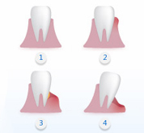

什么是牙周病？
牙周病也被称为“无声杀手”，是不伴随疼痛，不知不觉中病情恶化的可怕疾病，同时也是牙齿脱落的最大原因。
牙周病根据症状不同可分为牙龈炎和牙周炎。牙龈炎是较轻度的疾病，是仅在牙龈上发生的炎症。而牙龈炎症进一步发展，牙周膜、牙槽骨被破坏则发展成为牙周炎。
如何自我诊断牙周病？
根据《第三次全国口腔健康流行病学抽样调查结果》，在中国35-44岁的成年人中，85.5%存在不同程度的牙周问题。如何自我诊断？
- 刷牙时牙龈出血
- 牙龈红肿
- 口臭和口腔异味
- 牙龈胀痛
- 牙周溢脓
- 牙齿移位和松动
- 食物容易嵌塞牙缝
- 牙龈和牙齿分离
- 牙龈萎缩，牙根暴露
- 咀嚼疼痛无力
牙周病的根源是什么？
牙周病的直接原因是牙龈沟（牙齿和牙龈交界处的浅沟）里附着的菌巢，若不深入清洁极易形成牙菌斑及牙石，从而引起牙龈炎症。

牙周病的发展进程是怎样的？
- 阶段：健康牙龈阶段，健康的牙龈呈粉红色，牙龈紧贴在牙齿表面上，牙龈质韧且有弹性。
- 阶段：牙龈炎阶段，这时常常牙龈红肿，即使轻轻刷牙牙龈也会出血。
- 阶段： 牙龈炎症的基础上继续蔓延成牙周炎，导致支撑牙齿的牙槽骨遭到破坏，口臭更严重吃冷的食物牙齿酸痛或有短暂的刺痛。
- 阶段：如果一直置之不理，牙周组织无法支撑牙齿，最终牙齿脱落。